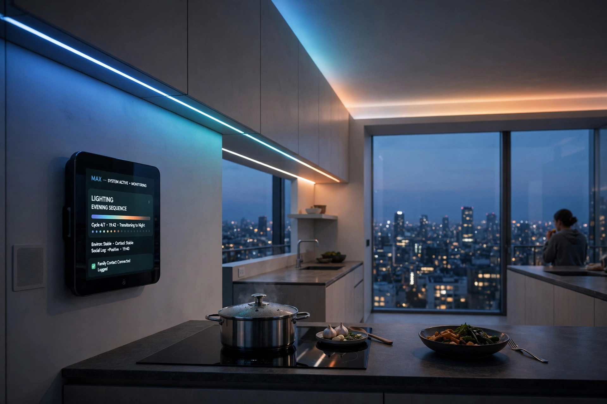
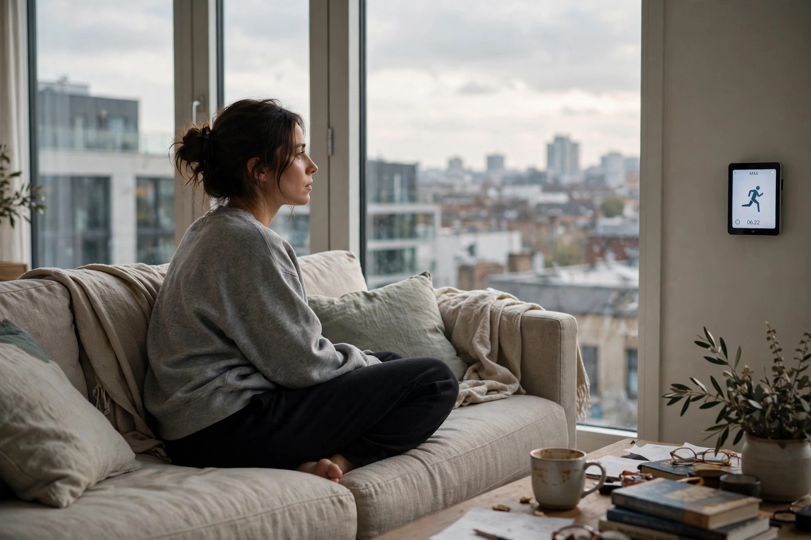
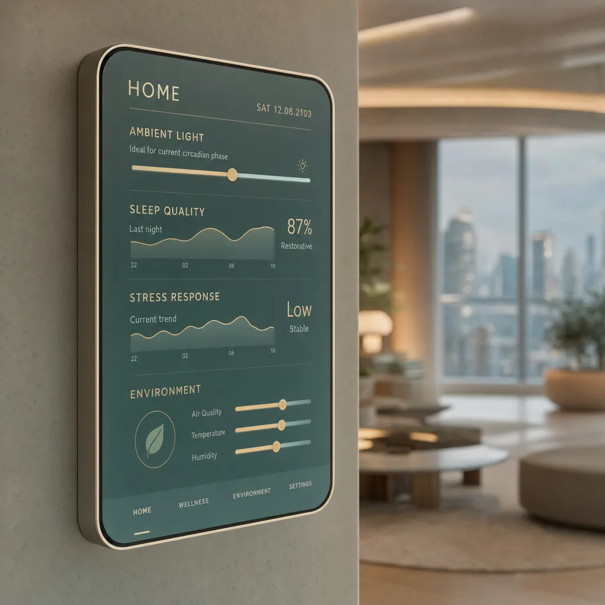
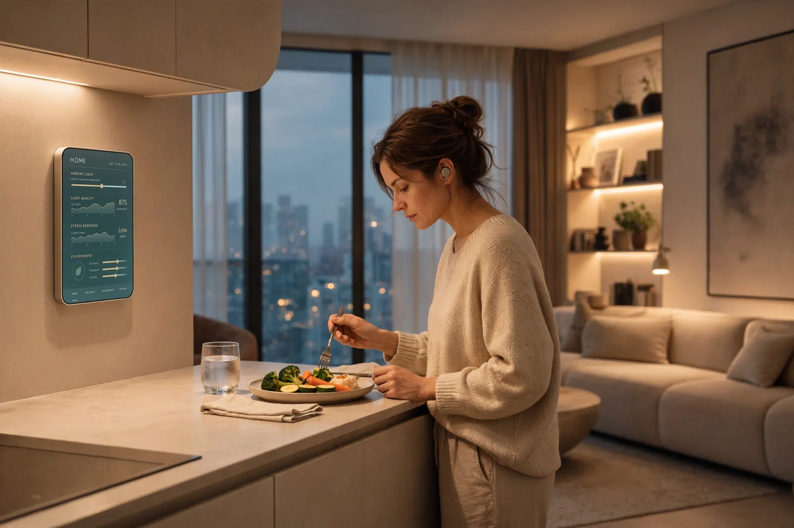
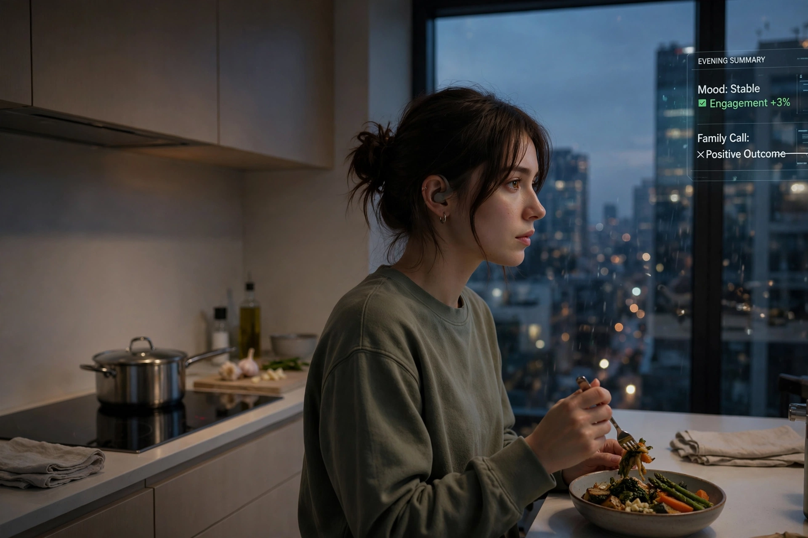
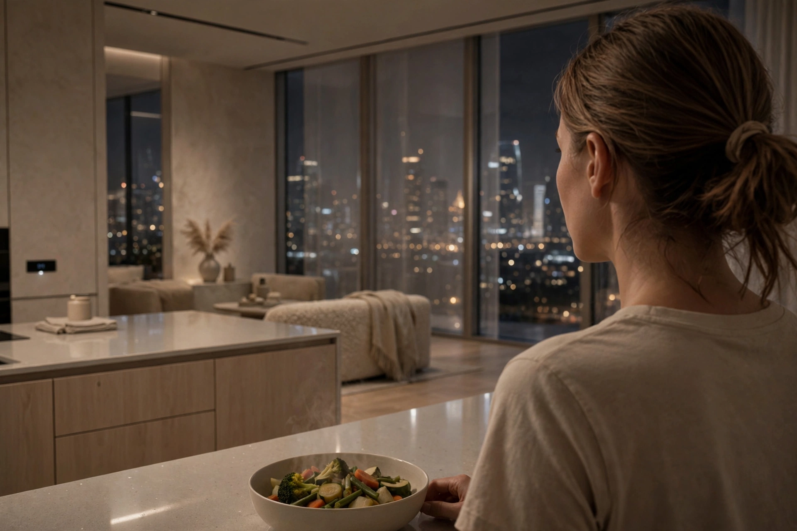

The apartment was exactly what it had always been.
J · Rinelle (2103) · 3:03
Audio runs straight through. The only control while it plays is the image strip, top right — it changes nothing but the picture. When the chapter ends you can look around, or not. Both are fine.